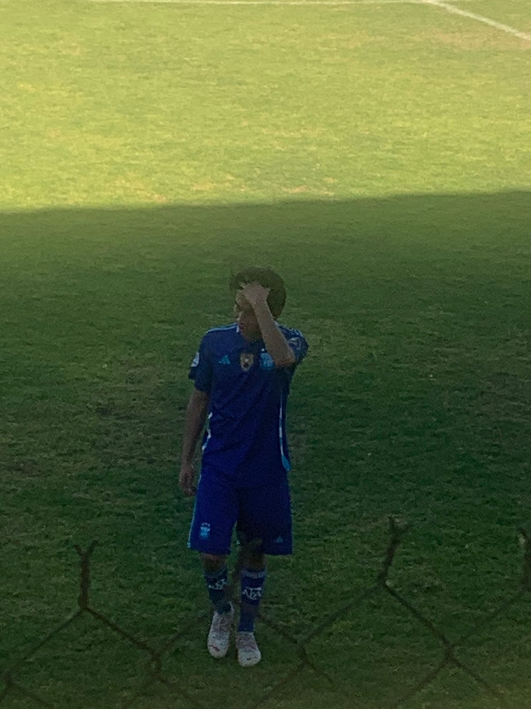

El futbol asociación, también llamado futbol soccer es un deporte de equipo, en el que se enfrentan dos conjuntos de 11 jugadores cada uno y el árbitro que se ocupa de que las normas se cumplan correctamente. Se juega en un campo rectangular de césped, con una meta o portería a cada lado del campo. El objetivo del juego es desplazar una pelota a través del campo para intentar ubicarla dentro de la meta contraria, acción que se denomina gol. El equipo que marque más goles al cabo del partido es el que resulta ganador.

ESTAS SON LAS REGLAS BASICAS DEL FUDBOL